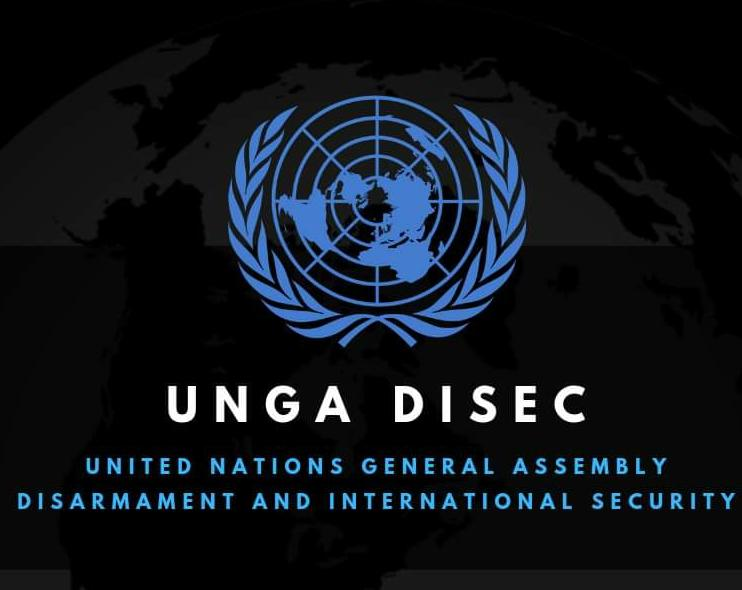

About the Committee

Disarmament and International Security
Established in 1945, the First Committee of the United Nations General Assembly (DISEC) is the premier global forum dedicated to maintaining international peace and security. It was born out of the ashes of the Second World War with a primary mandate to address the unprecedented threat of nuclear weapons.
Today, DISEC deals with all disarmament and global security questions. It considers principles governing cooperation in the maintenance of international peace, and seeks comprehensive solutions to threats within the international security regime.
WMD Non-Proliferation
Preventing the spread of nuclear, chemical, and biological weaponry.
Conventional Arms
Regulating the illicit trade of small arms and explosive remnants of war.
Emerging Threats
Addressing asymmetric warfare, cyber terrorism, and AI in military tech.
The Agenda
Focus Areas: Proxy Warfare and Cross-Border Terrorism
Geopolitical Context
The nature of global conflict has undergone a significant transformation. Instead of direct, declared wars between major powers, modern conflicts increasingly unfold through hybrid strategies that combine conventional military pressure with indirect forms of confrontation.
Hybrid warfare often involves states influencing conflicts through proxy actors, non-state militant groups, and indirect military support, allowing powers to pursue geopolitical objectives while avoiding full-scale interstate war.
Recent global developments highlight how regional conflicts can quickly expand into broader geopolitical crises involving multiple state and non-state actors.
Proxy Warfare & Regional Power Rivalries
Proxy warfare has become one of the defining characteristics of contemporary geopolitics. States frequently support allied militias, insurgent groups, or regional partners to advance strategic interests while limiting direct military confrontation. For example:
- In the ongoing 2026 Iran–US–Israel conflict, tensions escalated dramatically after coordinated U.S. and Israeli strikes on Iranian military and nuclear facilities in February 2026, triggering retaliatory missile and drone attacks by Iran across the region.
- The conflict has also drawn in regional actors such as Hezbollah in Lebanon, demonstrating how proxy forces can rapidly widen a regional confrontation.
- Similarly, in the Russia–Ukraine conflict, the involvement of separatist forces and indirect external support has often been analyzed through the lens of proxy warfare.
Such dynamics make conflicts more complex, as multiple actors influence the battlefield without always engaging directly.
Cross-Border Terrorism
Cross-border terrorism remains a persistent challenge to international peace and regional stability. Non-state actors operating across national boundaries can conduct attacks, destabilize regions, and intensify tensions between neighboring states. Examples include:
- The long-standing tensions between India and Pakistan, where accusations of cross-border militant activity have repeatedly heightened regional security concerns.
- Armed groups operating across borders in parts of the Middle East, where militant organizations often function across several states simultaneously.
These situations raise important questions about state responsibility, sovereignty, and international cooperation in counterterrorism efforts.
Delegate Directives for Research
To effectively participate in committee deliberations, delegates are encouraged to focus their research on the following areas:
- Examine your assigned country's historical stance on proxy warfare and indirect conflict strategies.
- Analyze your nation’s policies regarding non-state armed groups and cross-border militancy.
- Evaluate international legal frameworks addressing state responsibility for proxy actors and terrorism.
- Propose diplomatic mechanisms that could help reduce escalation and improve regional stability in hybrid conflicts.